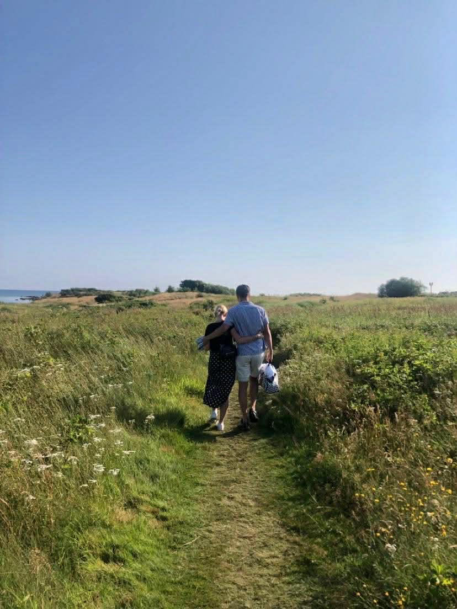

Klädkod
Klä dig i något du känner dig fin och bekväm i – det viktigaste för oss är att du trivs. Vi ser gärna att män bär kavaj eller kostym. För kvinnor ber vi vänligen att undvika vitt, blått och rött. För dig som vill matcha dagens känsla går bröllopets färgtema i mjuka toner av orange, korall och rosa.
Orange
Korall
Rosa

Parkering Under Dagen
För dig som vill parkera bilen under dagen rekommenderas Östra torget, Smedjan eller Atollen.
Dessa ligger närmast både kyrkan där vigseln äger rum och festlokalen där mottagningen kommer att hållas.
Observera att Södra vägen i Jönköping är avstängd för dig som tar den vägen.
För dig som vill parkera
Östra Torget
(3 minuter gång)
Smedjan
(6 minuter gång)
Atollen
(7 minuter gång)

Ta Dig Kollektivt
För dig som åker kollektivt under dagen finns det flera bra möjligheter att ta sig till området med buss.
Flera hållplatser finns i närheten och listas nedan.
För långväga gäster ligger även Jönköping Resecentrum relativt nära, med cirka 14 minuters promenad till kyrkan och festlokalen.
Närmaste hållplats för dig som åker buss
Östra Torget
(4 minuter gång)
Stadsbiblioteket
(5 minuter gång)
Jönköping Östra Centrum
(7 minuter gång)

Hålla Tal
För dig som vill hålla tal ber vi dig fylla i forumläret
(Tryck här!).
Att hålla tal behöver inte innebära ett traditionellt upplägg – vi uppmuntrar även roliga inslag och
aktiviteter som kan bidra till en härlig stämning under kvällen. För att kvällen ska flyta på fint har vi satt en
tidsgräns på cirka 5 minuter per inslag.
Tidsgränserna framgår även i formuläret, där du kan ange om du planerar något lite längre eller mer omfattande upplägg.